|
Hao Zhou 周 浩
Researcher, Ph.D. 研究员，博士 Monetization GenAI, ByteDance Inc. 字节跳动 Monetization GenAI Email:邮箱： zhouh156 (at) mail.ustc.edu.cn |
I am currently a researcher in Bytedance and focus on developing generative AI in the creative industry. Previously at Baidu, I worked on pretraining general vision-language models. I obtained my Ph.D. degree in University of Science and Technology of China (USTC) in 2022. My supervisors are Prof. Wengang Zhou and Prof. Houqiang Li. Prior to that, I received my B.S. degree from Xidian University (XDU) in 2017.
我目前在字节跳动担任研究员，主要关注创意行业中的生成式 AI 应用与研发。此前在百度期间，我参与研发通用视觉语言模型的预训练。我于 2022 年在中国科学技术大学（USTC）获得博士学位，导师为周文罡教授和李厚强教授。此前，我于 2017 年在西安电子科技大学（XDU）获得学士学位。
My research interests are in computer vision, and I am currently working on video understanding, generation and editing for creative ads.
我的研究兴趣主要在计算机视觉，目前关注面向广告创意的视频理解、生成与编辑。
*Equal contribution, †Corresponding author*共同一作，†通讯作者
|
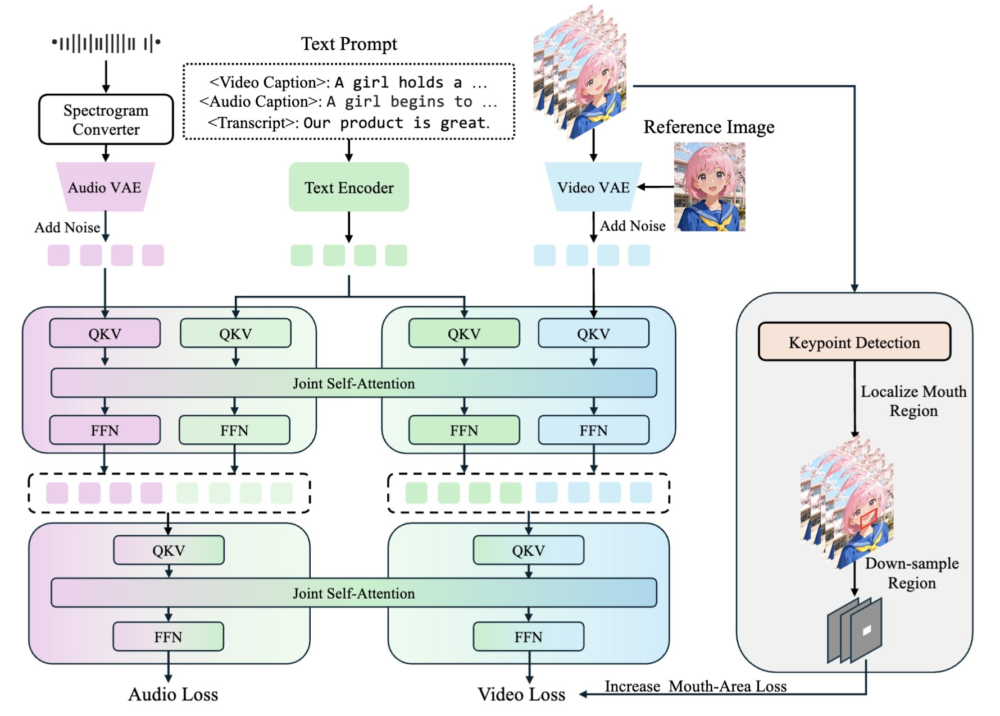 |
JoVA: Unified Multimodal Learning for Joint Video-Audio Generation and Editing
Xiaohu Huang*, Haoyang He*, Hao Zhou*, Qiangpeng Yang, Shilei Wen, Kai Han European Conference on Computer Vision (ECCV), 2026 pdf project code ⏱ timeline
|
|
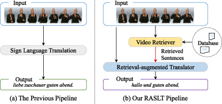 |
Retrieval-Augmented Sign Language Translation
Huijie Yao, Wengang Zhou, Hao Zhou, Hezhen Hu, Houqiang Li ACM Transactions on Multimedia Computing, Communications, and Applications (TOMM), 2026 doi dblp |
|
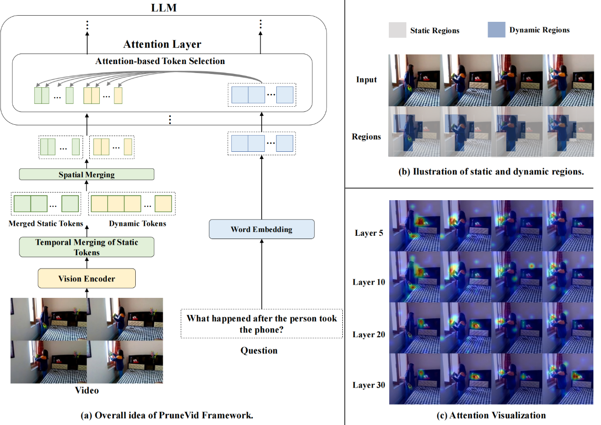 |
PruneVid: Visual Token Pruning for Efficient Video Large Language Models
Xiaohu Huang, Hao Zhou, Kai Han The Annual Meeting of the Association for Computational Linguistics (ACL), Findings, 2025 pdf code |
|
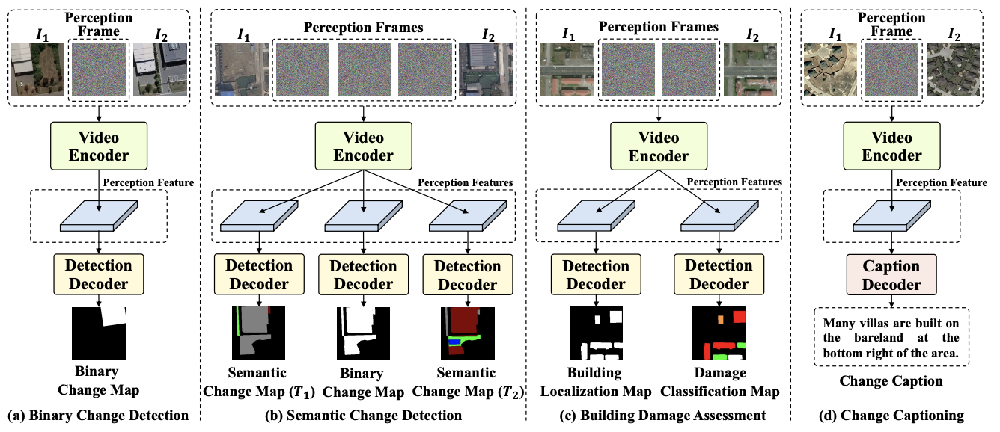 |
Change3D: Revisiting Change Detection and Captioning from A Video Modeling Perspective
Duowang Zhu, Xiaohu Huang, Haiyan Huang, Hao Zhou, Zhenfeng Shao IEEE/CVF Conference on Computer Vision and Pattern Recognition (CVPR), Highlight, 2025 pdf code |
|
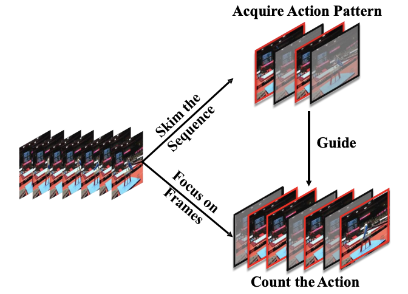 |
Skim then Focus: Integrating Contextual and Fine-grained Views for Repetitive Action Counting
Zhengqi Zhao*, Xiaohu Huang*, Hao Zhou†, Kun Yao, Errui Ding, Jingdong Wang, Xinggang Wang, Wenyu Liu, Bin Feng† International Journal of Computer Vision (IJCV), 2025 |
|
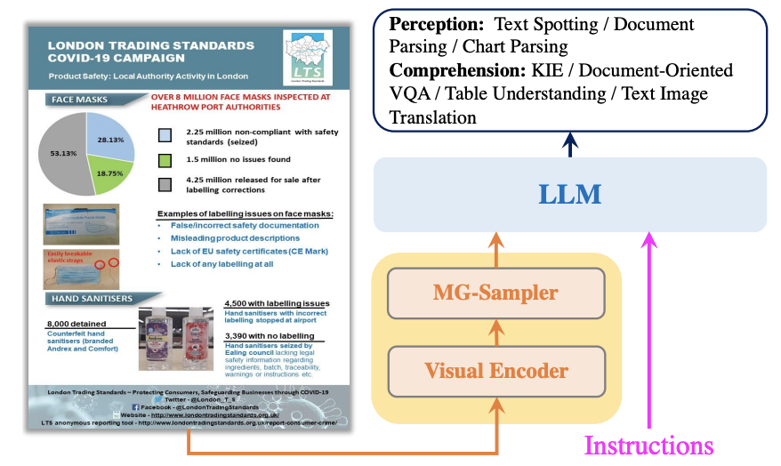 |
StrucTexTv3: An Efficient Vision-Language Model for Text-rich Image Perception, Comprehension, and Beyond
Pengyuan Lyu*, Yulin Li*, Hao Zhou, Weihong Ma, Xingyu Wan, Qunyi Xie, Liang Wu, Chengquan Zhang, Kun Yao, Errui Ding, Jingdong Wang arXiv preprint, 2024 |
|
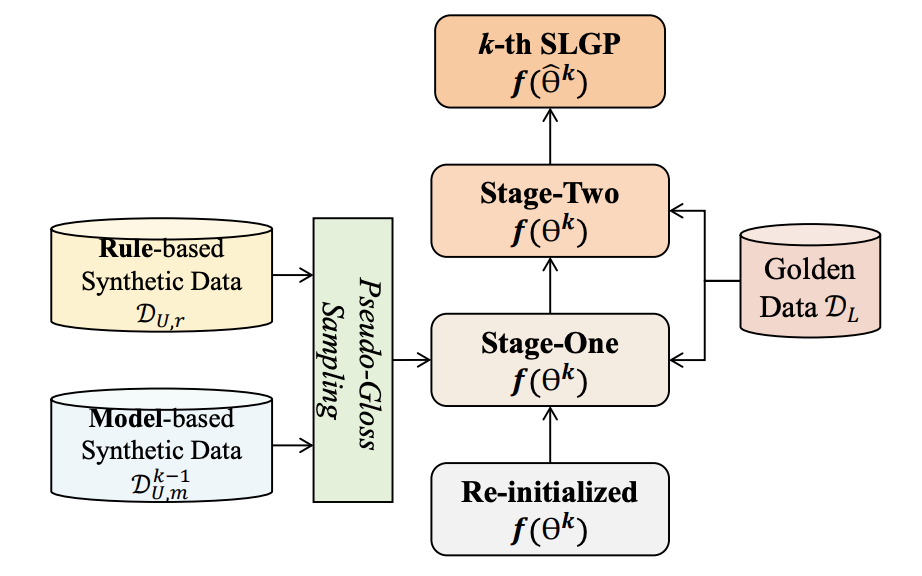 |
Semi-Supervised Spoken Language Glossification
Huijie Yao, Wengang Zhou, Hao Zhou, Houqiang Li The Annual Meeting of the Association for Computational Linguistics (ACL), 2024 pdf code |
|
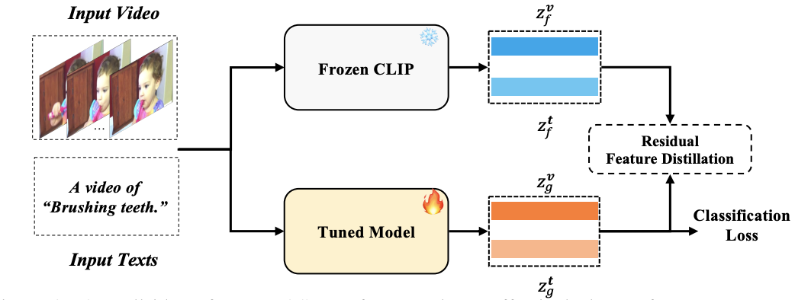 |
FROSTER: Frozen CLIP Is A Strong Teacher for Open-Vocabulary Action Recognition
Xiaohu Huang, Hao Zhou, Kun Yao, Kai Han International Conference on Learning Representations (ICLR), 2024 pdf code |
|
|
HAP: Structure-Aware Masked Image Modeling for Human-Centric Perception
Junkun Yuan*, Xinyu Zhang*, Hao Zhou, Jian Wang, Zhongwei Qiu, Zhiyin Shao, Shaofeng Zhang, Sifan Long, Kun Kuang, Kun Yao, Junyu Han, Errui Ding, Lanfen Lin, Fei Wu and Jingdong Wang Conference on Neural Information Processing Systems (NeurIPS), 2023 pdf code |
|
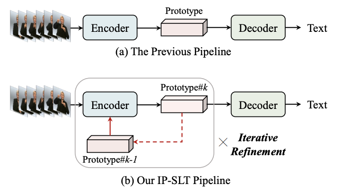 |
Sign Language Translation with Iterative Prototype
Huijie Yao, Wengang Zhou, Hao Feng, Hezhen Hu, Hao Zhou, Houqiang Li International Conference on Computer Vision (ICCV), 2023 |
|
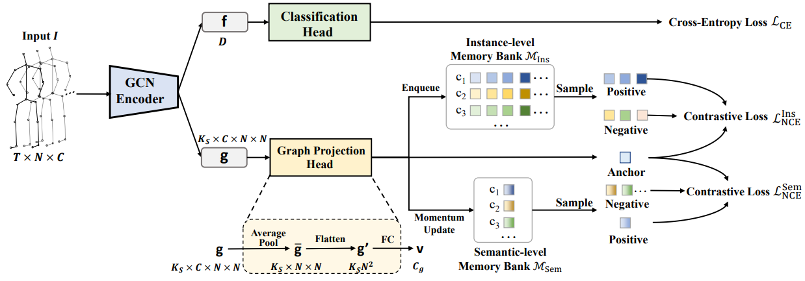 |
Graph Contrastive Learning for Skeleton-based Action Recognition
Xiaohu Huang, Hao Zhou†, Jian Wang, Haocheng Feng, Junyu Han, Errui Ding, Jingdong Wang, Xinggang Wang, Wenyu Liu, Bin Feng International Conference on Learning Representations (ICLR), 2023 pdf code |
|
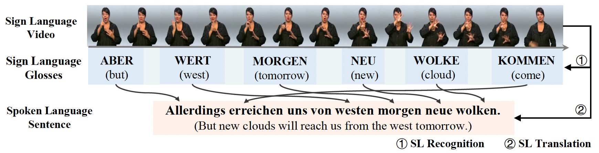 |
Spatial-Temporal Multi-Cue Network for Continuous Sign Language Recognition and Translation
Hao Zhou, Wengang Zhou, Yun Zhou, Houqiang Li IEEE Transactions on Multimedia, 2021 |
|
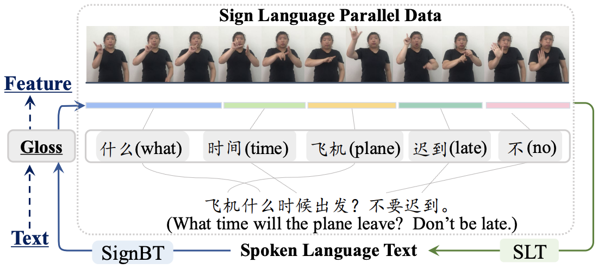 |
Improving Sign Language Translation with Monolingual Data by Sign Back-Translation
Hao Zhou, Wengang Zhou, Weizhen Qi, Junfu Pu, Houqiang Li IEEE/CVF Conference on Computer Vision and Pattern Recognition (CVPR), 2021 pdf citation |
|
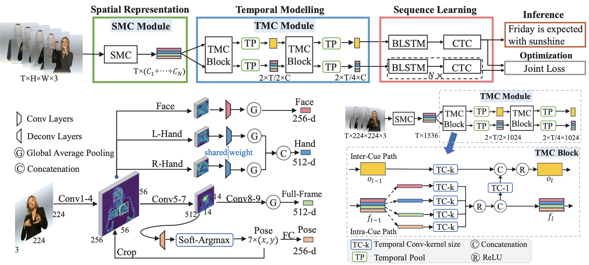 |
Spatial-Temporal Multi-Cue Network for Continuous Sign Language Recognition
Hao Zhou, Wengang Zhou, Yun Zhou, Houqiang Li AAAI Conference on Artificial Intelligence (AAAI), Oral, 2020 |
|
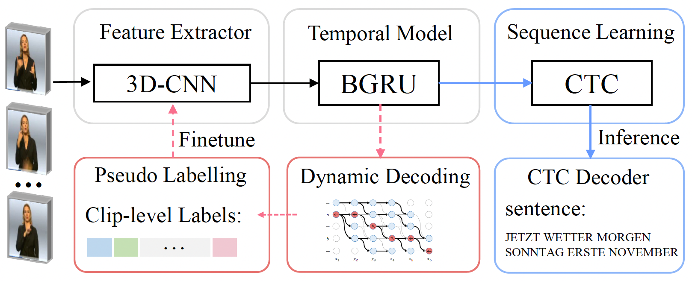 |
Dynamic Pseudo Label Decoding for Continuous Sign Language Recognition
Hao Zhou, Wengang Zhou, Houqiang Li IEEE International Conference on Multimedia and Expo (ICME), 2019 |
| Invited Reviewer for Journals and Conferences:期刊与会议受邀审稿人： |
| IEEE Transactions on Pattern Analysis and Machine Intelligence (TPAMI) |
| IEEE Transactions on Circuits and Systems for Video Technology (TCSVT) |
| IEEE Transactions on Multimedia (TMM) |
| IEEE Conference on Computer Vision and Pattern Recognition (CVPR), 2024, 2025, 2026 |
| International Conference on Computer Vision (ICCV), 2025 |
| European Conference on Computer Vision (ECCV), 2026 |
| The Annual Meeting of the Association for Computational Linguistics (ACL), 2025 |
| International Conference on Machine Learning (ICML), 2025 |
| AAAI Conference on Artificial Intelligence (AAAI), 2023, 2024, 2025 |
| Jan. 2025 - Present2025.01 - 至今 | Researcher, Monetization GenAI, Bytedance研究员，Monetization GenAI，字节跳动 |
| July. 2022 - Dec. 20242022.07 - 2024.12 | Researcher, Department of Computer Vision Technology (VIS), Baidu研究员，计算机视觉技术部（VIS），百度 |
| May. 2019 - July. 20192019.05 - 2019.07 | Research Intern, BigData Group, Baidu; Spatio-temporal Knowledge Graph研究实习生，BigData Group，百度；时空知识图谱研究 |
| Spring 2020 INY5205.02, Digital Image Analysis2020 春季 INY5205.02，数字图像分析 |
| Spring 2019 210708.01, Digital Image Processing B2019 春季 210708.01，数字图像处理 B |
| 2021 Runner-up (2/132), ChaLearn LAP Large Scale Signer Independent Isolated SLR Challenge, CVPR2021 亚军（2/132），ChaLearn LAP Large Scale Signer Independent Isolated SLR Challenge，CVPR |
| 2017 Outstanding Graduate Student, XDU2017 优秀毕业生，西安电子科技大学 |
| 2014 National Scholarship, Ministry of Education, PRC2014 国家奖学金，中华人民共和国教育部 |
 Google Scholar
Google Scholar GitHub
GitHub